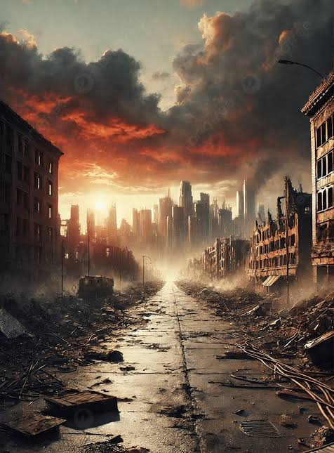
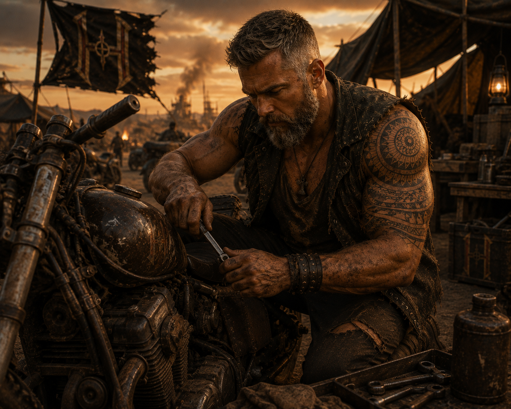
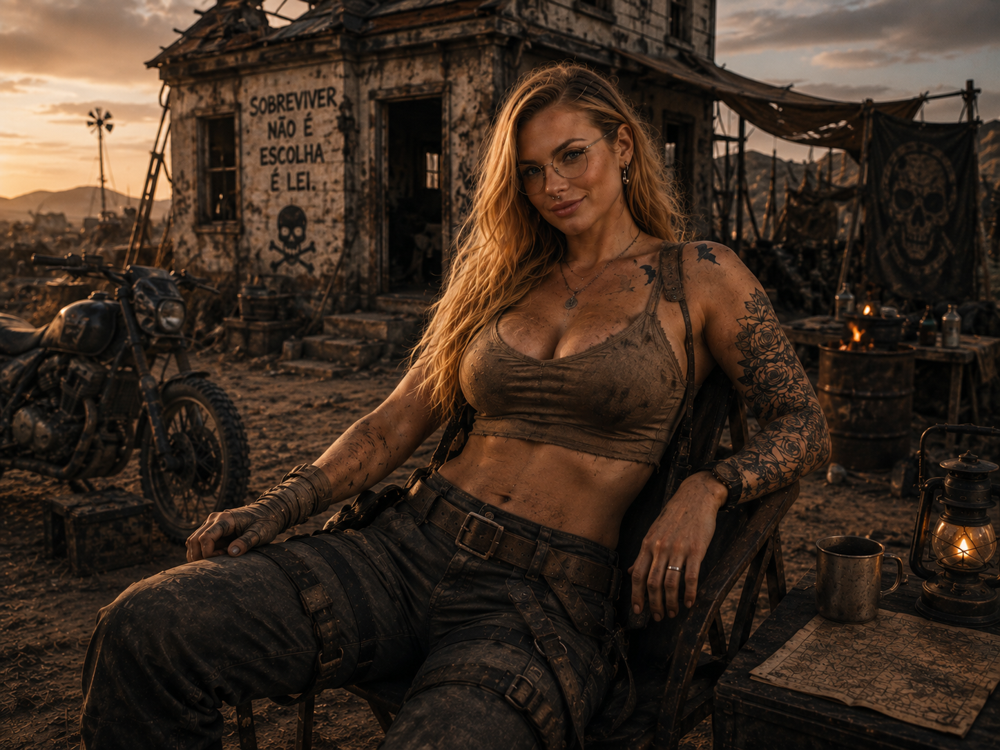
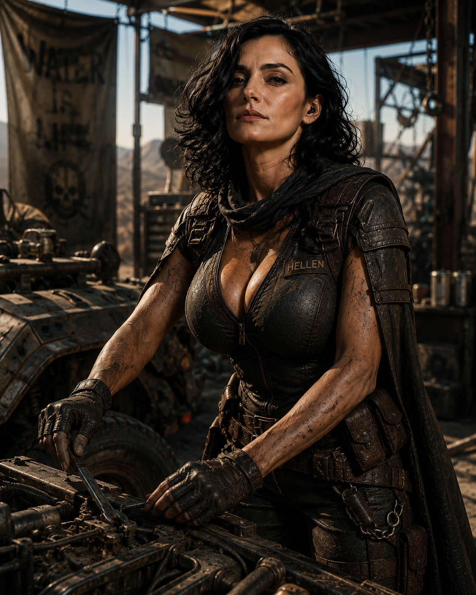
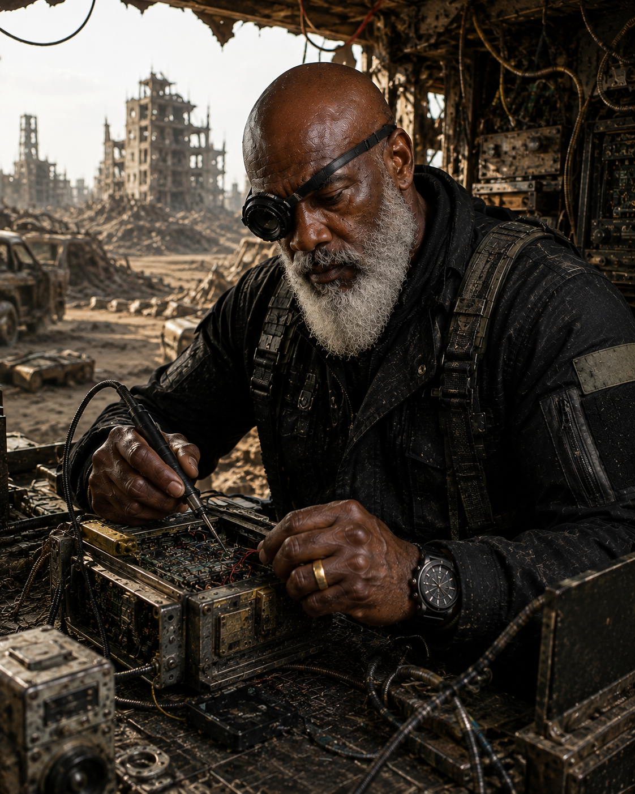
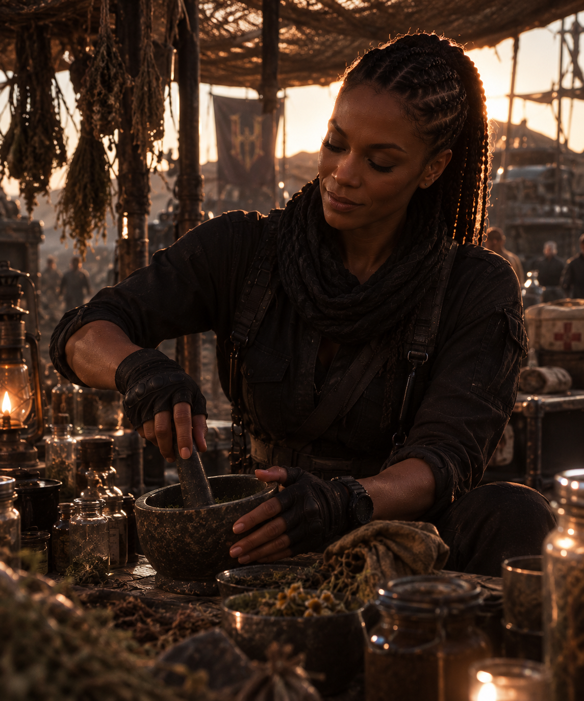
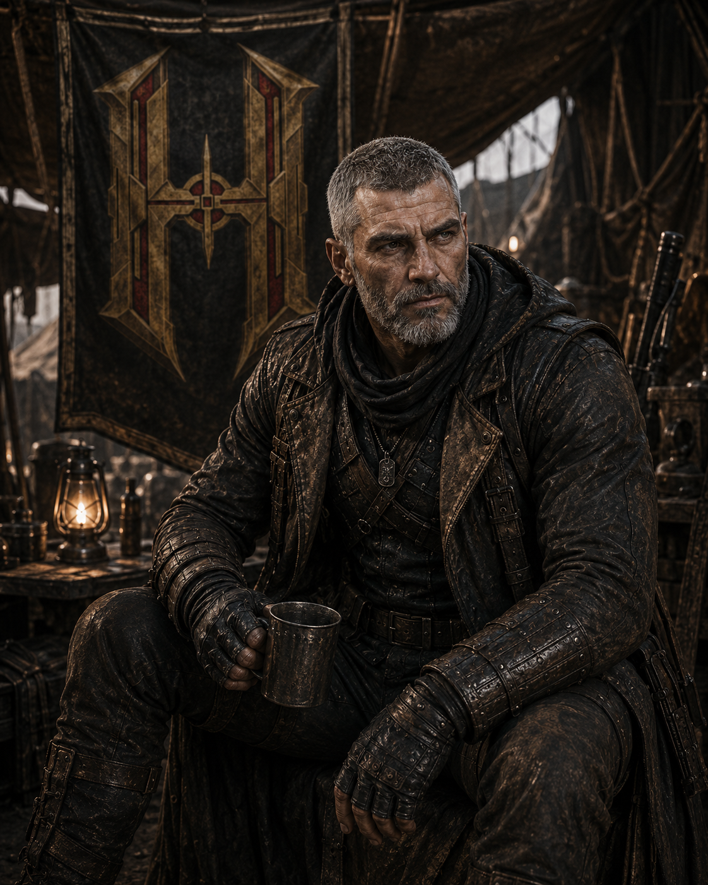

01ATM
01ATM
Horizonte queimado
Calor, poeira e estruturas consumidas pelo tempo ocupam o lugar das antigas cidades.
DADOS PARCIAISAnos depois do Dia D, os homens tentaram salvar o mundo destruindo o que ainda restava.
O céu queimou. As cidades silenciaram. A areia herdou as fronteiras.
Os governos desapareceram. Os mortos permaneceram. Sob a terra, os Hellsings ainda transmitiam.
E hoje a humanidade conhece tudo o que restou como...PRESENTE // MUITOS ANOS DEPOIS DO DIA D
Antes, eles eram uma família cercada por escolhas, missões e promessas. Agora, são nomes envelhecidos em um planeta de ferrugem, areia e frequências quase mortas. Mas uma delas ainda responde: Hellsings.
RELATÓRIO DO PRESENTE // FRAGMENTO 001
01ATM
Calor, poeira e estruturas consumidas pelo tempo ocupam o lugar das antigas cidades.
DADOS PARCIAIS 02H₂O
02H₂O
Água, abrigo e deslocamento definem as novas fronteiras entre aquilo que resta.
DADOS PARCIAIS
03RFVozes atravessam o ruído carregando nomes, alertas e coordenadas impossíveis de confirmar.
SINAL INTERMITENTE FREQUÊNCIA HLS // SINAL AUTENTICADO
PROTOCOLO AINDA ATIVO
FREQUÊNCIA HLS // SINAL AUTENTICADO
PROTOCOLO AINDA ATIVO
INTERCEPTAÇÃO 07 // ORIGEM SUBTERRÂNEA
“Quando governos viraram ruínas e fronteiras desapareceram, uma organização continuou ouvindo os pedidos que ninguém mais podia atender.”
SOBREVIVENTES // CONNORS + HELLSINGS

MC-03Mark ConnorVETERANO // DEFESAABRIR DOSSIÊ AS-04Ariani S ConnorNEGOCIAÇÃO // INTELIGÊNCIAABRIR DOSSIÊ
BC-05Britney ConnorMEMÓRIA // MATERNIDADEABRIR DOSSIÊ JC-06Jully ConnorSOBREVIVENTE // LUTOABRIR DOSSIÊ
H-10HellenINFILTRAÇÃO // IDENTIDADES PERDIDASABRIR DOSSIÊ N-05NaomiINTELIGÊNCIA // SINAIS PERDIDOSABRIR DOSSIÊ
N-05NaomiINTELIGÊNCIA // SINAIS PERDIDOSABRIR DOSSIÊ

L-06LukeCAMPO // ROTAS MORTASABRIR DOSSIÊ
C-07ClhoeCAMPO // ÚLTIMO LARABRIR DOSSIÊ
D-08DimitriASSALTO // DÍVIDA DE GUERRAABRIR DOSSIÊTreze registros recuperados. Sobreviventes e memórias diferentes carregando o fim do mundo.
 LINHAGENS CONNOR // JACK + ALICE / MARK + ARIANI
LINHAGENS CONNOR // JACK + ALICE / MARK + ARIANI
TRÊS PERÍODOS // UMA ÚNICA HISTÓRIA
A família jovem, a mansão e os Hellsings antes da queda.
ABRIR MEMÓRIA →O Dia D. O instante em que todas as linhas se partiram.
ACESSO INDISPONÍVELO presente devastado e as consequências de tudo que aconteceu.
VOCÊ ESTÁ AQUICAIXA-PRETA CONNOR // MEMÓRIA ANTERIOR AO DIA D
MAPA DE PODER // SEIS SINAIS DOMINANTES
Resgate, inteligência e proteção. Um código antigo atravessando um mundo novo.
ABRIR DOSSIÊ DA FACÇÃO → F-02 // HOSTILIDADE VARIÁVELCOBRASInformação, veneno e rotas clandestinas. Nunca atacam sem conhecer a saída.
ABRIR TERRITÓRIO → F-03 // ORIGEM DESCONHECIDADOMINUSUma facção cercada por rumores. Seus símbolos surgem onde ninguém deveria sobreviver.
INTERCEPTAR SINAL → F-04 // TERRITÓRIO VERMELHOFACÇÃO DO FOGOControlam refinarias, fornalhas e cidades queimadas. Para eles, cinzas são fronteiras.
ENTRAR NO CINTURÃO → F-05 // COMBOIO EM MOVIMENTONÔMADES DE FERROComboios blindados negociam combustível, peças e passagem pelas estradas mortas.
ACOMPANHAR COMBOIO → F-06 // RESERVA HÍDRICAORDEM DO SALGuardam poços, dessalinizadores e os últimos mapas de água do continente.
SOLICITAR ACESSO →FREQUÊNCIA CIVIL // CANAL ABERTO
Há luzes se movendo na antiga rodovia. Três veículos. Nenhuma bandeira.
Ouvi dizer que existe terra limpa ao norte. Não sei se é esperança ou armadilha.
Precisamos de antibióticos. Temos água e duas baterias para troca.
BUSCA ATIVA // TRANSMISSÕES INCOMPLETAS
Antigo contato do FBI. Última frequência fragmentada além da zona norte.
PROCURANDO...Identidade incompleta. Menções recuperadas em canais militares desativados.
PROCURANDO...Patente confirmada. Nome e localização corrompidos durante a transmissão.
PROCURANDO...TRANSMISSÃO FINAL // IDENTIDADE NÃO CONFIRMADA
“Se alguém encontrar este sinal, não procure o mundo que perdemos. Procure aquilo que ainda pode ser salvo.”
QUANDO O SISTEMA NÃO PODE AGIR